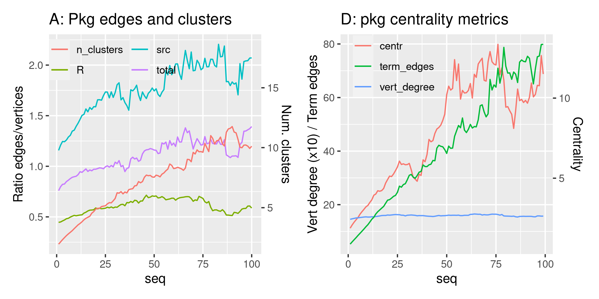

library ("pkgstatsAnalyses")
here <- here::here ()
datafile <- file.path (here, "data-raw", "pkgstats-results.Rds")
v_data_dir <- file.path (here, "vignettes", "data")
logmean <- function (x, ...) {
10 ^ mean (log10 (x [which (x > 0)]), na.rm = TRUE)
}
fig09_png <- file.path (here, "vignettes", "figures", "fig09.png")
# graph metrics for inter-package dependency networks
xraw <- load_pkgstats_data (datafile, raw = TRUE, latest = FALSE)
x <- xraw |>
group_by (package) |>
mutate (nfns_total = n_fns_r + n_fns_src) |>
mutate (seq = seq_along (package)) |>
group_by (seq) |>
summarise (
#n_edges = mean (n_edges [which (!is.na (n_edges))]),
#n_edges_r = mean (n_edges_r [which (!is.na (n_edges_r))]),
#n_edges_src = mean (n_edges_src [which (!is.na (n_edges_src))]),
#n_clusters = mean (n_clusters [which (!is.na (n_clusters))]),
n_edges = logmean (n_edges / nfns_total, na.rm = TRUE),
n_edges_r = logmean (n_edges_r / n_fns_r, na.rm = TRUE),
n_edges_src = logmean (n_edges_src / n_fns_src, na.rm = TRUE),
n_clusters = logmean (n_clusters, na.rm = TRUE),
centr_dir_mn = logmean (centrality_dir_mn, na.rm = TRUE),
centr_dir_md = logmean (centrality_dir_md, na.rm = TRUE),
centr_dir_mn_no0 = logmean (centrality_dir_mn_no0, na.rm = TRUE),
centr_dir_md_no0 = logmean (centrality_dir_md_no0, na.rm = TRUE),
centr_undir_mn = logmean (centrality_undir_mn, na.rm = TRUE),
centr_undir_md = logmean (centrality_undir_md, na.rm = TRUE),
centr_undir_mn_no0 = logmean (centrality_undir_mn_no0, na.rm = TRUE),
centr_undir_md_no0 = logmean (centrality_undir_md_no0, na.rm = TRUE),
central_edges_dir = mean (num_terminal_edges_dir, na.rm = TRUE),
term_edges = logmean (num_terminal_edges_undir, na.rm = TRUE),
node_degree_mn = logmean (node_degree_mn, na.rm = TRUE),
node_degree_md = logmean (node_degree_md, na.rm = TRUE),
node_degree_max = logmean (node_degree_max, na.rm = TRUE))
x1 <- x |>
select (seq, starts_with ("n_")) |>
rename (total = n_edges, R = n_edges_r, src = n_edges_src) |>
filter (seq <= 100)
coeff_fig09_p1 <- max (x1$n_clusters) / max (x1$total)
colours_fig09_p1 <- c ("total" = "red",
"R" = "green",
"src" = "blue",
"n_clusters" = "orange")
fig09_p1 <- x1 |>
ggplot (aes (x = seq)) +
geom_line (aes (y = total, col = "total")) +
geom_line (aes (y = R, col = "R")) +
geom_line (aes (y = src, col = "src")) +
geom_line (aes (y = n_clusters / coeff_fig09_p1, col = "n_clusters")) +
#scale_colour_manual (values = colours_fig09_p1) +
ylab ("Ratio edges/vertices") +
scale_y_continuous (
sec.axis = sec_axis (~.*coeff_fig09_p1, name = "Num. clusters")) +
ggtitle ("A: Pkg edges and clusters") +
guides (color = guide_legend (ncol = 2)) +
theme (legend.title = element_blank (),
legend.position = c (0.3, 0.9),
legend.background = element_rect(fill='transparent', colour='transparent'))
# slope:
s <- lm (total ~ seq, data = x1)$coefficients [2]
x2 <- x |>
select (seq, centr_dir_mn, node_degree_mn, term_edges) |>
rename (centr = centr_dir_mn,
vert_degree = node_degree_mn) |>
mutate (vert_degree = vert_degree * 10) |>
filter (seq < 100)
coeff_fig09_p2 <- max (x2$centr) / max (x2$term_edges)
colours_fig1e_p2 <- c ("centr" = "red",
"vert_degree" = "green",
"term_edges" = "blue")
fig09_p2 <- x2 |>
ggplot (aes (x = seq)) +
geom_line (aes (y = centr / coeff_fig09_p2, col = "centr")) +
geom_line (aes (y = vert_degree, col = "vert_degree")) +
geom_line (aes (y = term_edges, col = "term_edges")) +
ggtitle ("D: pkg centrality metrics") +
ylab ("Vert degree (x10) / Term edges") +
scale_y_continuous (
sec.axis = sec_axis (~.*coeff_fig09_p2, name = "Centrality")) +
#guides (color = guide_legend (ncol = 2)) +
theme (legend.title = element_blank (),
legend.position = c (0.25, 0.87),
legend.background = element_rect(fill='transparent', colour='transparent'))

Figure 9 Network metrics from function call networks as a function of release sequence.